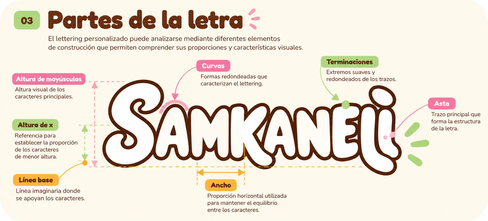
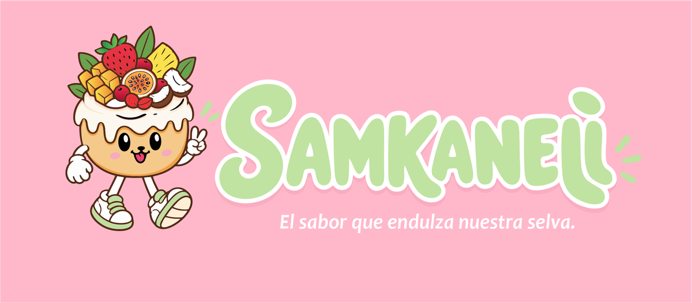

Inicio › Manual de identidad
Manual básico
Cómo mantener la marca coherente
Una guía rápida para cualquier persona que diseñe una pieza para SAMKANELI. Cada norma indica si viene de la ficha o si es una recomendación propuesta pendiente de aprobación.

Logotipo principal
Disponibilidad por confirmar
El imagotipo une la mascota y el nombre. Es el arte original y no se redibuja. Se identifica como principal la versión sobre rosa; confirmar con el equipo.
Versiones permitidas
Definido en la ficha

Usa la versión que mejor contraste con el fondo. Si falta una versión (por ejemplo, simplificada para tamaños muy pequeños), es una propuesta por diseñar y aprobar.
Colores
Definido en la ficha
Crema para fondos, marrón para textos y contrastes, rosa para detalles de dulzura y verde para acentos naturales. No uses los cuatro con la misma intensidad. Hay una discrepancia documentada en el rosa (#FAACD0 / #FAADC0); ver Identidad visual.
Tipografías
Recomendación propuesta
Titulares con fuente redondeada, gruesa y de estilo display; textos con una sans serif legible. En esta web: Fredoka y Nunito, alternativas gratuitas compatibles. La fuente exacta del logotipo no está confirmada.
Mascota
Recomendación propuesta

- Se usa sin deformar ni recortar.
- Puede ir sola en avatares, stickers y empaques.
- Evita colocarla sobre fondos que la oculten.
Elementos gráficos
Recomendación propuesta
Espirales de canela, hojas, frutas, formas redondeadas y el sello del eslogan. Son apoyos: el producto y el logotipo siempre tienen protagonismo.
Composición y fondos
Recomendación propuesta
- Fondos crema con espacio en blanco.
- Una imagen protagonista por pieza.
- Textos breves y legibles.
- Sobre fondos oscuros, usa la versión con contorno blanco.
Márgenes y proporciones
Recomendación propuesta
Propuesta: dejar alrededor del logotipo un margen libre equivalente al ancho de una letra «M» del nombre.
La ficha no define márgenes; esta medida es una recomendación para aprobar.
Usos correctos e incorrectos
Recomendación propuesta
✓ Sí
- Mantener las proporciones originales.
- Usar los colores de la paleta.
- Dar aire alrededor del logotipo.
✕ No
- Estirar, rotar o deformar.
- Cambiar los colores.
- Bajar el contraste o añadir efectos pesados.
Aplicaciones
Definido en la ficha
Empaques, uniformes, papelería, local y redes deben compartir logotipo, paleta y tono. Consulta los ejemplos en Aplicaciones.
Normas de comunicación
Definido en la ficha
- Amigable, acogedora, sencilla, responsable y alegre.
- No prometer lo que no se puede garantizar.
- Emojis y signos con moderación.
Antes de publicar una pieza
Recomendación propuesta
- ¿Se ve el logotipo completo y sin deformar?
- ¿Se usan los colores de la paleta?
- ¿El texto se lee bien?
- ¿El mensaje es claro y no promete de más?
- ¿Lleva la mascota o una referencia al producto?
- ¿Se parece a las demás piezas de la marca?